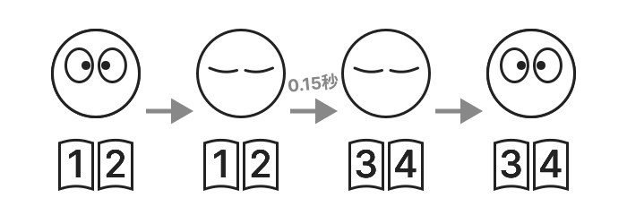

FlipByBlink
E-book app that lets you turn pages just by blinking


Overview
Only one special function. This is an app for iPhone and iPad.
Other than the above functions, this is a simple and general e-book reader app.
How the page turn works


When you close your eyelids a little longer, the page is sent, and when you open your eyes, the page has already moved to the next page. Normal blinking does not cause the page to turn over.
Blinking is detected by the device's built-in camera and sensors.
Like general e-book applications, you can also turn pages by tapping or swiping the screen.
E-book format
- Only "fixed-layout" books are supported. (For example, books converted directly from paper books, comic books, etc.)
- Support for importing PDF files
Use Cases
- General reading
- Playing a musical instrument while looking at sheet music
- Cooking while checking a recipe book
- Reading on trains and buses
- Reading for people with physical disabilities

Support Devices
Uses Apple's framework ARKit/FaceTrackingAPI to detect blinking. This requires TrueDepth camera or A12Bionic or later chips.
⚠️ Unsupported Devices
- iPhone
- 6s
- 6s Plus
- 7
- 7 Plus
- 8
- 8 Plus
- SE 1st generation
- iPad
- 5th generation
- 6th generation
- 7th generation
- Air 2nd generation
- mini 4th generation
- Pro 9.7-inch model
- Pro 10.5-inch model
- Pro 12.9" model 1st generation
- Pro 12.9-inch model 2nd generation
- iPod touch
üöß Experimental features (opt-in)
- Change the time required for page flip (0.15 seconds by default)
- Function to go back one page by winking one eye
Specifications
Price
Free of charge
In-app purchase
None
Platforms
- iOS 14.7 or later
- iPadOS 14.7 or later